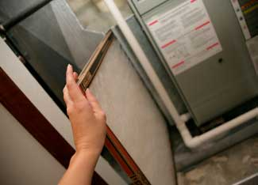

“It’s a clinker! That blasted, stupid furnace! Dadgummit!” shouts Ralphie’s father in A Christmas Story. Then we hear incomprehensible cursing as the father tumbles down the basement stairs to work on the furnace, and the narrator (Ralphie as an adult) says, “In the heat of battle, my father wove a tapestry of obscenity that, as far as we know, is still hanging in space over Lake Michigan.”
Ever feel that way? Such emotion is understandable when your furnace quits working on a cold day. But some basic maintenance can save you aggravation and minimize unexpected problems. You can schedule a tuneup with a technician each year, but there are some simple things you can do yourself, too.
Be sure to turn off power to your furnace before working on it so that a motor doesn’t start while you’re tinkering. You can usually change a filter without turning off the gas or oil supply, but for all other maintenance be cautious and turn off the fuel supply. Before you do, be sure you know how to relight the pilot light.
With almost any heating system, replacing the thermostat with a programmable digital thermostat will save energy. These thermostats automatically adjust the temperature of your home to keep you comfortable when you’re there and save energy when you’re not.
At a very minimum, change the air filter in any forced-air furnace on a monthly basis. A good programmable thermostat will remind you when to change the filter. Some experts recommend inexpensive fiberglass filters; others, midrange filters that trap smaller particles. Furnace performance should not be impacted if filters are changed regularly. Base filter selection on your sensitivity to air-borne particles. Vacuum the blower and accessible areas of the furnace every few months. Even with regular filter changes dust will accumulate on the blades of the blower.
If you have an older natural gas or propane furnace, oil the motor and blower shafts - they only need a couple of drops of 20-weight oil on an annual basis. Most new models have sealed bearings that don’t need to be oiled.
Your furnace blower might be powered by a V-belt connected to an electric motor. If the belt is cracking or fraying, it needs to be replaced. Even if the belt looks OK, you might want to check the blower and motor pulleys for alignment; if they’re not aligned the belt will wear out faster (and make more noise). To align it, loosen the screws holding the motor in place, then align the pulleys using a metal carpenter’s square and tighten the screws.
You can replace the oil filter to keep clean fuel flowing to an oil-burning furnace. Check the owner’s manual to find out how to bleed air out of the fuel line, though it may not be necessary on your model. Regularly checking the fuel lines and connections for leaks is a good idea. For more information on maintaining and repairing an oil furnace, read Oil-Furnace Troubleshooting.
If you have a hot water system, bleed air out of radiators annually. While the system is on, simply open the bleeder valve on each radiator until water comes out without sputtering. Be prepared to catch the water and be careful - it’s hot! There are different types of bleeder valves on radiators: Some open with a screwdriver; others, with a special key or a knob already in place.
For all types of furnaces, make sure the outside vents and chimneys are not blocked by snow, leaves, nests, etc. Such blockages can cause carbon monoxide hazards. Flues that leak pose carbon monoxide and fire hazards, so check for cracks or joints that are separating.
Do you have other tips for maintaining furnaces? Post them in the comments section.
|
 ISTOCKPHOTO Changing your furnace filter on a regular basis is one of the easiest and most inexpensive things you can do to maintain your furnace and household air quality. |
|
|